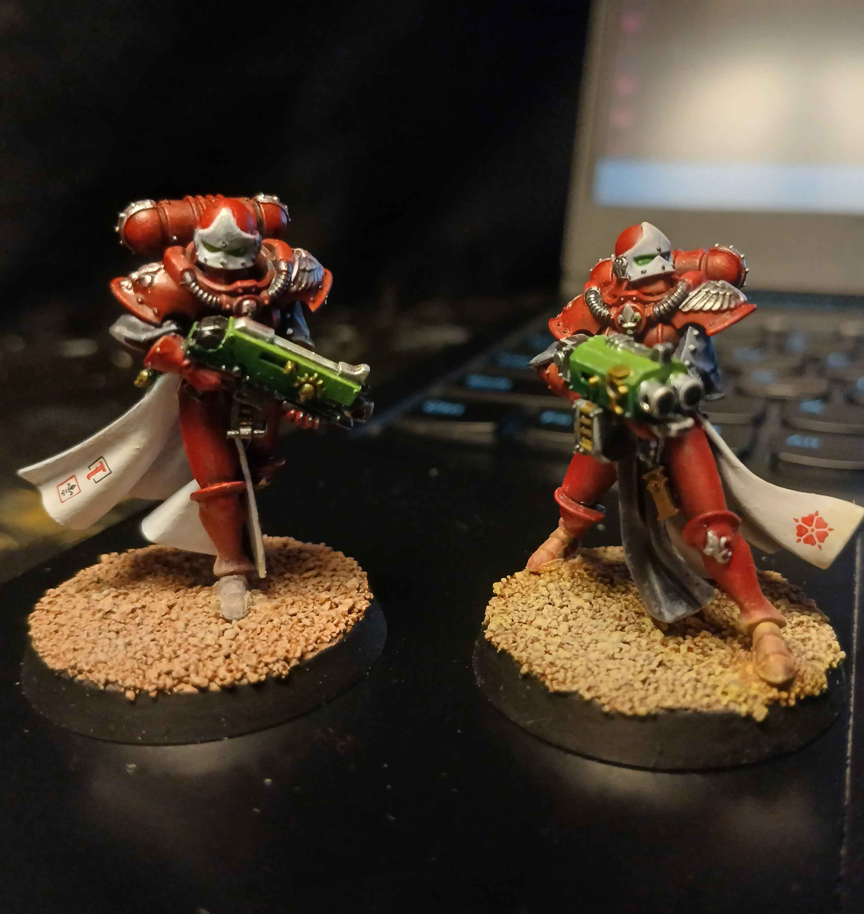

- Height: 6'3"
- Weight: 240 lbs
- Date of birth: July 2, 42,005
- Place of Birth: The Jungles of Catachan
Personal info

- Drawing
- Miniature painting
- Listening to podcasts and audiobooks
- Cleansing heresy in the name of the Emperor
- Playing videogames
Hobbies

The minis I painted
- Drawing
- Miniature painting
- Stocking items
- Moving palets
- Condensing palets
- Pushing carts
Skills